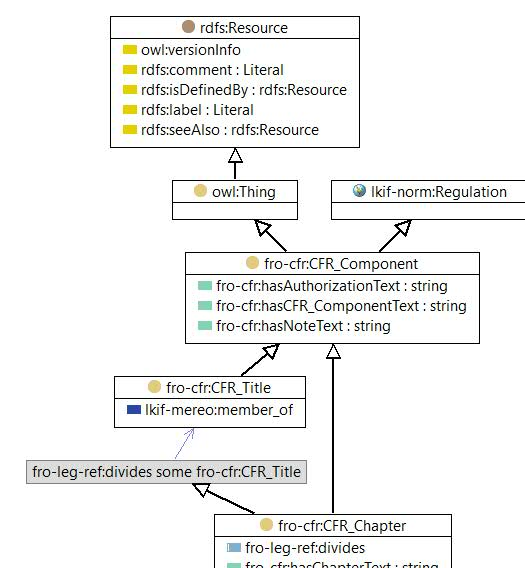

-

Jurgen Ziemer

|
| Jurgen Ziemer |
|
| Jayzed Data Models Inc. |
|
| owl:Class |
|
| CFR Chapter |
|
| Each CFR title is divided into chapters, which usually bear the name of the issuing agency. |
| Instances | |
|---|---|
| fro-cfr:Chapter II - FEDERAL RESERVE SYSTEM, fro-cfr:Chapter II - SECURITIES AND EXCHANGE COMMISSION | |
| References | |
|---|---|
| |
© 2016 Jayzed Data Models Inc. generated with TopBraid Composer back to Financial Regulation Ontology or documentation index